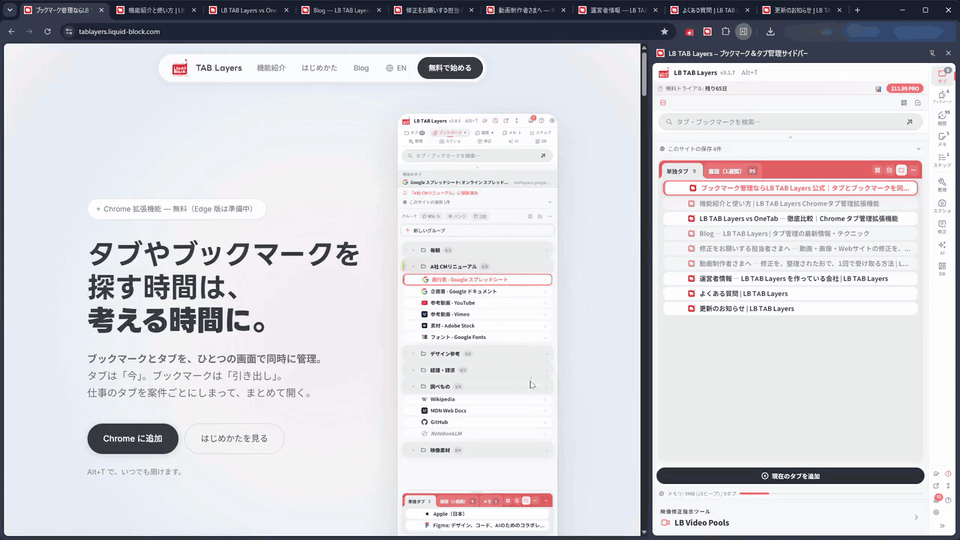

消えるペン
ページの上に、じかに線を引く。2 秒ほどで消える。残るペンもある。保存も送信もしない
場所：右の列の下／Alt+Shift+D
消えるペンで、どのページの上にも線を引けます。保存も送信もしません。消えるペン／残るペン、6 色、「ページを操作」（下のページを押せる）を切り替えられます。C ですべて消し、Esc で閉じます。

ページの上に、じかに線を引く。2 秒ほどで消える。残るペンもある。保存も送信もしない
場所：右の列の下／Alt+Shift+D
消えるペンで、どのページの上にも線を引けます。保存も送信もしません。消えるペン／残るペン、6 色、「ページを操作」（下のページを押せる）を切り替えられます。C ですべて消し、Esc で閉じます。

グループやタブを、リンクつきの文にしてコピー
場所：グループの「…」／行のボタン
選んだものを、URL・題名と URL・Markdown・HTML・CSV で
場所：選択モードの「コピー」
ページとメモを、AI に貼れる形でまとめてコピー
場所：グループの右クリック／選択モード
選んだページを、ノートブックへ
場所：右クリック／選択モード
メモを、X・Threads・Bluesky などの投稿の画面へ
場所：ブックマークのメモの画面
グループとブックマークを、シートに保存・シートから戻す
場所：設定 › データ